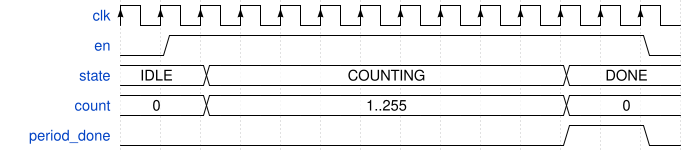
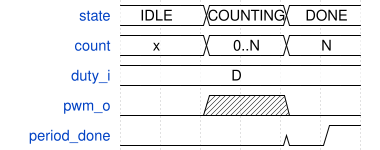
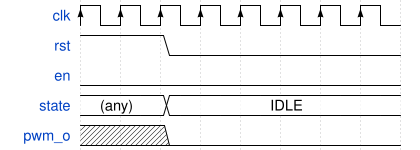

pwm_controller — Timing Diagrams
All timing diagrams extracted from pwm_controller.sv.
Diagrams are sourced from .. wavedrom:: blocks in the VHDL
source comments above each process.
P Next State

P Outputs

P State Reg
